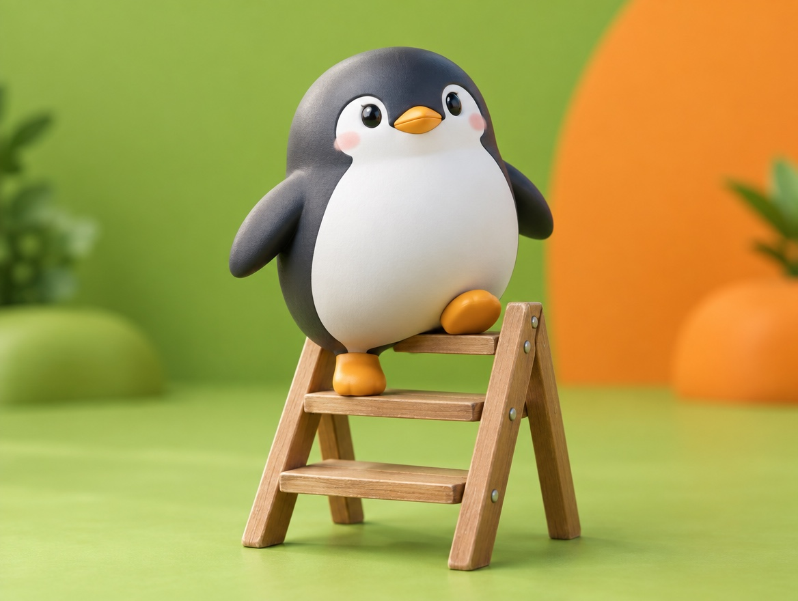

📝 DRAFT · 下書き — まだ本番に出していません · 下書き一覧
🐧 EVERYDAY LIFE⚡ 22 SEC
Get used to talking to strangers, one small step at a time 🪜

The Fear
If you fear what people think, they say talking to strangers is good practice.
Small Steps
Do not start with a hard one; start from a small step.
For example, start with a small "Thank you for the meal" at a restaurant.
⚡ TRY IT
Climb the brave ladder
Level 10
🍽️ Say "Thank you for the meal" in a small voice.
Level 9
🔊 Say it so they can hear you.
Level 8
👀 Say it while looking at their eyes.
Level 7
😋 Say "It was delicious."
Level 6
🔁 Say "I will come again."
Level 5
🌤️ Say "Good morning" to a neighbor.
Level 4
🛗 Ask "Which floor?" in an elevator.
Level 3
🍜 Ask "What do you recommend?" at a restaurant.
Level 2
♨️ Ask "Are you from around here?" at a hot spring.
Level 1
🍣 Sit alone at a new sushi counter.
🏆 All clear!
You sat alone at a sushi counter. You are brave!
😊 They smiled back!
👍 Nothing bad happened.
💬 They said, "Thank you!"
✨ Easier than I thought!
🌫️ "Should I…?"
⚡ No-hesitation stars: 0/10
Tap before the fog of "Should I…?" fills up. Then you get a ⚡ star.
🍣 You climbed all 10 levels! Kind people were everywhere.
Kind People
When you try, you see many people are kinder than you thought.
Just Say It
The biggest enemy is "Should I…?", so say it fast before you think.
📚 I learned this from the Japanese blog "Panda no Ondo".